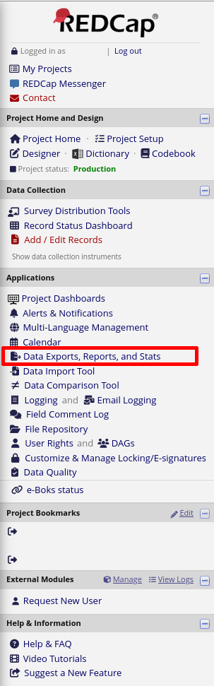
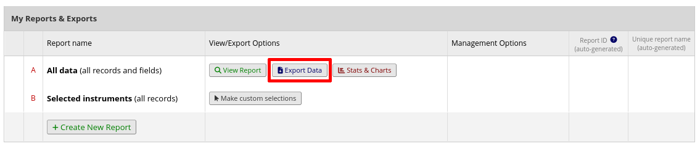
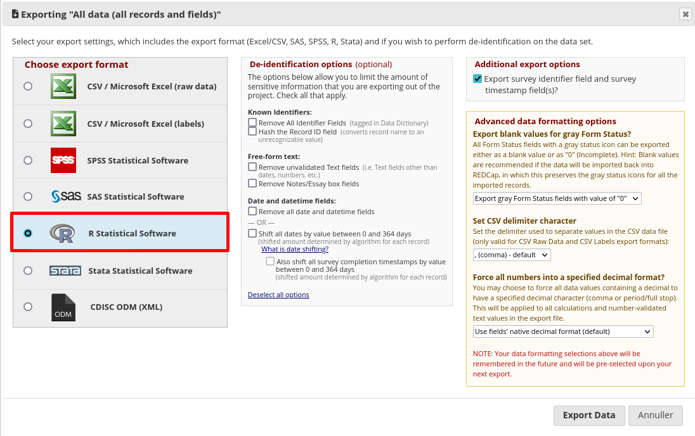
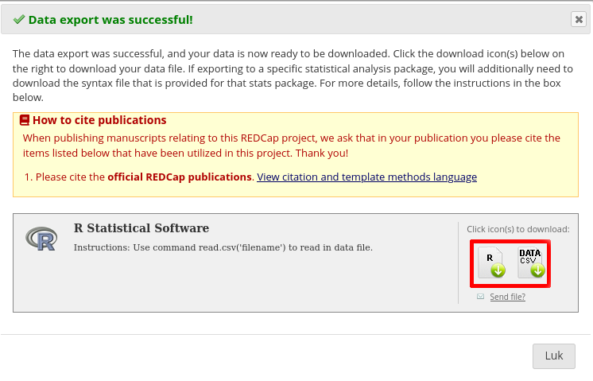

id,test,value,group,note
1,1,12,"A",""
1,2,14,"B",""
2,1,15,"C","My note"
2,2,13,"A",""Load data
RStudio
Input
How to load data into R
1 Data formats
In the following, we assume that you are working with data stored locally on the same computer as your R installation.
R can read data from a number of different data file formats:
2 CSV files
2.1 What is a CSV file?
- CSV is an acronym for ‘Comma Separated Values’.
- It is a format for storing data in a simple text file.
- CSV files inherit all the benefits of working with simple text files.
- Conversely, CSV files are limited in the complexity of the data it can store: only simple tabular data.
- Read more about CSV files here wiki.
2.2 An example file
An example of a CSV file could look like this:
Think! What does the CSV file above tell us about the data? …and not?
From the raw text of the CSV file we can deduce, that the data consists of 5 variables and 4 observations, delimited by ‘,’. We can take a guess as to the meaning of the variables from their names in line 1, but we can not know. Also, note that a CSV file does not necessarily include a title line.
Also, ask yourself
- What is the data type of each variable? (integer, numerical, factors/categorical, etc)?
- What are the allowed or valid values for each variable?
- What happens if a variable is missing
…such meta-data is not stored within a CSV and we need to keep tabs on it ourselves: It is a good idea to maintain a data definition file along with the CSV file itself, which described the data in more detail.
2.2.1 Is a comma the best choice?
In fact, as decimal numbers are typed as 0.25 in some locales/countries and 0,25 in others, there is a risk that decimal commas can be mistaken for value-delimiting commas, and vice versa. It is thus not uncommon to use a semi-colon instead of a comma.
2.3 Tidyverse solution
- Tidyverse includes the package readr which provides a number of functions to read CSV files.
- The function
read_delim()is the generic function which reads tabular data delimited by whatever character is specified in the function call. - The functions
read_csv(),read_tsv()andread_csv2()are just special cases ofread_delim()(using comma, tab and semi-colon as delimiters).
If you need a base-R alternative..
Base R includes the function read.table() which has a number of special cases, including read.csv() that also serves to read tabular data from CSV files. Note the use of dot rather than an underscore in the function name.
2.4 RTFM – Read the fine manual
Acquaint yourself with the read_delim() function using the help function in RStudio.
2.5 Try it out
Ideally, use you own CSV data file for these exercises.
Alternatively, you will find a sample CSV file here
- Inspect the data with
my_dataandstr(my_data).
Coding example..
library(readr)
my_data <- read_csv(here("path_to_file", "fil.csv"))
my_data
str(my_data)2.6 Exercises
- What happens if you use
read_csv()andread_csv2()respectively without specifying a delimiter? - What happens if you set the parameter
col_names = FALSE? - What happens if you set the parameter
na = "NA"? - Look at the data structure as revealed by the
str()function: Are all you variables of the type you expected them to be?- How could you use the parameter
col_typesto specify data types?
- How could you use the parameter
3 Excel files
3.1 What is an Excel file?
- Microsoft Excel is a spreadsheet program – that means it includes many other features than simply storing data in tabular format.
- There are (at least) two different versions of excel files (xls and xlsx) –
read_excel()should handle both. - If you use excel files there are a couple of issues you need to pay attention to:
- An excel file can contain more than one ‘sheet’ – you may need to specify which sheet to load
- Character encoding – Microsoft often uses ISO character encoding. It may be prudent to ensure that you file uses UTF8 or UTF16 character encoding instead,
- Data type conversion?
3.2 Tidyverse solution
- Tidyverse includes the package readxl which provides a number of functions to read excel files.
3.3 RTFM – Read the fine manual
Acquaint yourself with the readxl()` function using the help function in RStudio.
3.4 Try it out
Ideally, use you own excel data file for these exercises.
Alternatively, you will find a sample xlsx file here
- Inspect the data with
my_dataandstr(my_data).
Coding example..
library(readxl)
my_data <- read_excel(here("path_to_file", "fil.xls"))
my_data
str(my_data)3.5 Exercises
??
4 RedCap
- Firstly, log into the REDCap web portal
- Go to ‘My Projects’
- Find the project from which you want to download data
- In the left-hand side menu, choose Applications / Exports, Reports and Stats

- Then click ‘Export data’

- Select the option ‘R Statistical Software’ and click ‘Export data’
 Now click each of the two icons (lower right) labelled R and *DATA**

4.1 Data structure
The data will be exported as a standard csv file.
The csv file will be accompanied by an R script file, which will read the csv file and wrangle the data into an R data frame called ‘data’.
You can run the R script once to generate the ‘data’ data frame and export to an RDS file and load that into your own R scripts.
Note The R script file depends on the Hmisc package being installed.
4.2 Direct database access
It is possible to access the REDCap database directly from R code. See this link for more information.
This will also require a valid access token. The REDCap administrator should be able to provide you with such a token, if permitted.
5 RDS
- RDS is short for R Data Serialization – that means data which is complex in nature and asymmetrical such as e.g. a list of lists of variable lengths, can be serialized and stored easily.
- RDS is not a simple text file – it is a compressed format not well suited for human readers
- RDS is however, a simple and efficient way to store and retrieve data which already exist in R memory.
https://readr.tidyverse.org/reference/read_rds.html